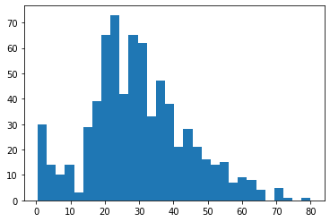
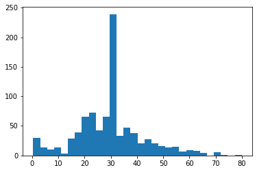

05.04 - PARTICIPATE IN KAGGLE#
!wget --no-cache -O init.py -q https://raw.githubusercontent.com/rramosp/ai4eng.v1/main/content/init.py
import init; init.init(force_download=False); init.get_weblink()
import numpy as np
import matplotlib.pyplot as plt
import tensorflow as tf
from sklearn.metrics import accuracy_score
from sklearn.model_selection import train_test_split
import local.lib.mlutils
import pandas as pd
from tensorflow.keras import Sequential
from tensorflow.keras.layers import Dense, Dropout, Flatten
%matplotlib inline
We use Titanic data in Kaggle#
Register to Kaggle
Enter the competition Titanic Data at Kaggle
Download the
train.csvandtest.csvfilesUPLOAD THE FILES to your notebook environment (in Colab, open the Files tab and upload)
d = pd.read_csv("train.csv")
print (d.shape)
(891, 12)
d.head()
| PassengerId | Survived | Pclass | Name | Sex | Age | SibSp | Parch | Ticket | Fare | Cabin | Embarked | |
|---|---|---|---|---|---|---|---|---|---|---|---|---|
| 0 | 1 | 0 | 3 | Braund, Mr. Owen Harris | male | 22.0 | 1 | 0 | A/5 21171 | 7.2500 | NaN | S |
| 1 | 2 | 1 | 1 | Cumings, Mrs. John Bradley (Florence Briggs Th... | female | 38.0 | 1 | 0 | PC 17599 | 71.2833 | C85 | C |
| 2 | 3 | 1 | 3 | Heikkinen, Miss. Laina | female | 26.0 | 0 | 0 | STON/O2. 3101282 | 7.9250 | NaN | S |
| 3 | 4 | 1 | 1 | Futrelle, Mrs. Jacques Heath (Lily May Peel) | female | 35.0 | 1 | 0 | 113803 | 53.1000 | C123 | S |
| 4 | 5 | 0 | 3 | Allen, Mr. William Henry | male | 35.0 | 0 | 0 | 373450 | 8.0500 | NaN | S |
Understand NaN values are present
for i in d.columns:
print ("%20s"%i, np.sum(d[i].isna()))
PassengerId 0
Survived 0
Pclass 0
Name 0
Sex 0
Age 177
SibSp 0
Parch 0
Ticket 0
Fare 0
Cabin 687
Embarked 2
d.Embarked.value_counts()
S 644
C 168
Q 77
Name: Embarked, dtype: int64
plt.hist(d.Age.dropna().values, bins=30);

Remove uninformative columns
del(d["PassengerId"])
del(d["Name"])
del(d["Ticket"])
del(d["Cabin"])
Fix NaN values
observe the different filling policies we decide to have
d["Embarked"] = d.Embarked.fillna("N")
d["Age"] = d.Age.fillna(d.Age.mean())
d.head()
| Survived | Pclass | Sex | Age | SibSp | Parch | Fare | Embarked | |
|---|---|---|---|---|---|---|---|---|
| 0 | 0 | 3 | male | 22.0 | 1 | 0 | 7.2500 | S |
| 1 | 1 | 1 | female | 38.0 | 1 | 0 | 71.2833 | C |
| 2 | 1 | 3 | female | 26.0 | 0 | 0 | 7.9250 | S |
| 3 | 1 | 1 | female | 35.0 | 1 | 0 | 53.1000 | S |
| 4 | 0 | 3 | male | 35.0 | 0 | 0 | 8.0500 | S |
plt.hist(d.Age.dropna().values, bins=30);

Turn categorical columns to a one_hot encoding
def to_onehot(x):
values = np.unique(x)
r = np.r_[[np.argwhere(i==values)[0][0] for i in x]]
return np.eye(len(values))[r].astype(int)
k = to_onehot(d.Embarked.values)
k[:5]
array([[0, 0, 0, 1],
[1, 0, 0, 0],
[0, 0, 0, 1],
[0, 0, 0, 1],
[0, 0, 0, 1]])
def replace_columns_with_onehot(d, col):
k = to_onehot(d[col].values)
r = pd.DataFrame(k, columns=["%s_%d"%(col, i) for i in range(k.shape[1])], index=d.index).join(d)
del(r[col])
return r
d.head()
| Survived | Pclass | Sex | Age | SibSp | Parch | Fare | Embarked | |
|---|---|---|---|---|---|---|---|---|
| 0 | 0 | 3 | male | 22.0 | 1 | 0 | 7.2500 | S |
| 1 | 1 | 1 | female | 38.0 | 1 | 0 | 71.2833 | C |
| 2 | 1 | 3 | female | 26.0 | 0 | 0 | 7.9250 | S |
| 3 | 1 | 1 | female | 35.0 | 1 | 0 | 53.1000 | S |
| 4 | 0 | 3 | male | 35.0 | 0 | 0 | 8.0500 | S |
d = replace_columns_with_onehot(d, "Embarked")
d.head()
| Embarked_0 | Embarked_1 | Embarked_2 | Embarked_3 | Survived | Pclass | Sex | Age | SibSp | Parch | Fare | |
|---|---|---|---|---|---|---|---|---|---|---|---|
| 0 | 0 | 0 | 0 | 1 | 0 | 3 | male | 22.0 | 1 | 0 | 7.2500 |
| 1 | 1 | 0 | 0 | 0 | 1 | 1 | female | 38.0 | 1 | 0 | 71.2833 |
| 2 | 0 | 0 | 0 | 1 | 1 | 3 | female | 26.0 | 0 | 0 | 7.9250 |
| 3 | 0 | 0 | 0 | 1 | 1 | 1 | female | 35.0 | 1 | 0 | 53.1000 |
| 4 | 0 | 0 | 0 | 1 | 0 | 3 | male | 35.0 | 0 | 0 | 8.0500 |
d = replace_columns_with_onehot(d, "Sex")
d.head()
| Sex_0 | Sex_1 | Embarked_0 | Embarked_1 | Embarked_2 | Embarked_3 | Survived | Pclass | Age | SibSp | Parch | Fare | |
|---|---|---|---|---|---|---|---|---|---|---|---|---|
| 0 | 0 | 1 | 0 | 0 | 0 | 1 | 0 | 3 | 22.0 | 1 | 0 | 7.2500 |
| 1 | 1 | 0 | 1 | 0 | 0 | 0 | 1 | 1 | 38.0 | 1 | 0 | 71.2833 |
| 2 | 1 | 0 | 0 | 0 | 0 | 1 | 1 | 3 | 26.0 | 0 | 0 | 7.9250 |
| 3 | 1 | 0 | 0 | 0 | 0 | 1 | 1 | 1 | 35.0 | 1 | 0 | 53.1000 |
| 4 | 0 | 1 | 0 | 0 | 0 | 1 | 0 | 3 | 35.0 | 0 | 0 | 8.0500 |
d.shape, d.values.sum()
((891, 12), 60142.86312352941)
Put all transformations together#
def clean_titanic(d):
del(d["PassengerId"])
del(d["Name"])
del(d["Ticket"])
del(d["Cabin"])
d["Embarked"] = d.Embarked.fillna("N")
d["Fare"] = d.Fare.fillna(d.Fare.mean())
d["Age"] = d.Age.fillna(d.Age.mean())
d = replace_columns_with_onehot(d, "Embarked")
d = replace_columns_with_onehot(d, "Sex")
return d
transform train and test data together
observe that test data does not have a
Survivalcolumn. This is the result to submit to Kaggle
dtr = pd.read_csv("train.csv")
dts = pd.read_csv("test.csv")
lentr = len(dtr)
dtr.shape, dts.shape
((891, 12), (418, 11))
dts.head()
| PassengerId | Pclass | Name | Sex | Age | SibSp | Parch | Ticket | Fare | Cabin | Embarked | |
|---|---|---|---|---|---|---|---|---|---|---|---|
| 0 | 892 | 3 | Kelly, Mr. James | male | 34.5 | 0 | 0 | 330911 | 7.8292 | NaN | Q |
| 1 | 893 | 3 | Wilkes, Mrs. James (Ellen Needs) | female | 47.0 | 1 | 0 | 363272 | 7.0000 | NaN | S |
| 2 | 894 | 2 | Myles, Mr. Thomas Francis | male | 62.0 | 0 | 0 | 240276 | 9.6875 | NaN | Q |
| 3 | 895 | 3 | Wirz, Mr. Albert | male | 27.0 | 0 | 0 | 315154 | 8.6625 | NaN | S |
| 4 | 896 | 3 | Hirvonen, Mrs. Alexander (Helga E Lindqvist) | female | 22.0 | 1 | 1 | 3101298 | 12.2875 | NaN | S |
get data ready for training
source_cols = [i for i in dtr.columns if i!="Survived"]
all_data = pd.concat((dtr[source_cols], dts[source_cols]))
all_data.index = range(len(all_data))
all_data = clean_titanic(all_data)
Xtr, ytr = all_data.iloc[:lentr].values, dtr["Survived"].values
Xts = all_data.iloc[lentr:].values
print (Xtr.shape, ytr.shape)
print (Xts.shape)
(891, 11) (891,)
(418, 11)
cross validate for model selection
from sklearn.ensemble import RandomForestClassifier
from sklearn.svm import SVC
from sklearn.model_selection import cross_val_score
rf = RandomForestClassifier()
print (cross_val_score(rf, Xtr, ytr))
svc = SVC()
print (cross_val_score(svc, Xtr, ytr))
[0.77094972 0.81460674 0.84831461 0.79213483 0.83707865]
[0.59217877 0.71348315 0.69101124 0.68539326 0.69101124]
now train with full dataset and generate submission for Kaggle
rf.fit(Xtr, ytr)
preds_ts = rf.predict(Xts)
preds_ts
array([0, 0, 0, 1, 0, 0, 0, 0, 1, 0, 0, 0, 1, 0, 1, 1, 0, 1, 0, 1, 1, 1,
1, 1, 1, 0, 1, 1, 1, 0, 0, 0, 1, 0, 1, 1, 0, 0, 0, 1, 0, 1, 0, 1,
1, 0, 0, 0, 1, 1, 0, 0, 1, 1, 0, 0, 0, 0, 0, 1, 0, 0, 0, 1, 1, 1,
1, 0, 0, 1, 1, 0, 0, 0, 1, 0, 0, 1, 0, 1, 1, 0, 0, 0, 0, 0, 1, 0,
1, 1, 0, 0, 1, 0, 1, 0, 1, 0, 0, 0, 1, 0, 0, 0, 1, 0, 0, 0, 0, 0,
0, 1, 1, 0, 1, 0, 0, 1, 0, 1, 1, 0, 1, 0, 0, 1, 0, 1, 0, 0, 1, 0,
0, 0, 0, 0, 0, 0, 0, 0, 0, 1, 0, 0, 1, 0, 0, 0, 1, 0, 1, 0, 0, 1,
0, 0, 1, 1, 1, 1, 1, 1, 1, 0, 0, 0, 0, 0, 1, 0, 0, 0, 0, 0, 0, 1,
1, 1, 1, 1, 0, 1, 1, 0, 1, 0, 1, 0, 0, 0, 0, 0, 1, 0, 1, 0, 1, 0,
0, 0, 1, 1, 0, 1, 0, 0, 0, 0, 1, 0, 0, 0, 0, 0, 1, 0, 1, 0, 1, 0,
1, 0, 1, 1, 1, 0, 0, 1, 0, 0, 0, 1, 0, 0, 1, 0, 1, 1, 1, 1, 1, 1,
0, 0, 0, 0, 1, 0, 1, 0, 1, 0, 0, 0, 0, 0, 0, 0, 1, 0, 0, 0, 1, 1,
0, 0, 0, 0, 0, 0, 0, 0, 1, 1, 0, 1, 0, 0, 0, 0, 0, 1, 1, 0, 1, 0,
0, 0, 0, 0, 0, 0, 0, 0, 0, 0, 1, 0, 0, 0, 0, 0, 0, 0, 1, 1, 1, 1,
0, 0, 0, 1, 0, 0, 1, 1, 0, 0, 0, 0, 0, 0, 0, 1, 1, 0, 1, 0, 0, 0,
1, 1, 0, 0, 0, 0, 1, 0, 0, 0, 0, 0, 0, 1, 0, 1, 0, 1, 0, 1, 1, 0,
0, 0, 1, 0, 1, 0, 0, 1, 0, 1, 1, 1, 1, 0, 0, 0, 1, 1, 0, 1, 0, 0,
1, 1, 0, 0, 0, 0, 0, 0, 1, 0, 1, 1, 0, 0, 0, 0, 0, 1, 0, 0, 0, 1,
0, 1, 0, 0, 1, 0, 1, 0, 0, 0, 0, 0, 1, 1, 1, 1, 0, 0, 1, 0, 0, 1])
get predictions ready to submit to Kaggle
see https://www.kaggle.com/c/titanic#evaluation for file format
submission = pd.DataFrame([dts.PassengerId, pd.Series(preds_ts, name="Survived")]).T
submission.head()
| PassengerId | Survived | |
|---|---|---|
| 0 | 892 | 0 |
| 1 | 893 | 0 |
| 2 | 894 | 0 |
| 3 | 895 | 1 |
| 4 | 896 | 0 |
submission.to_csv("titanic_kaggle.csv", index=False)
!head titanic_kaggle.csv
PassengerId,Survived
892,0
893,0
894,0
895,1
896,0
897,0
898,0
899,0
900,1